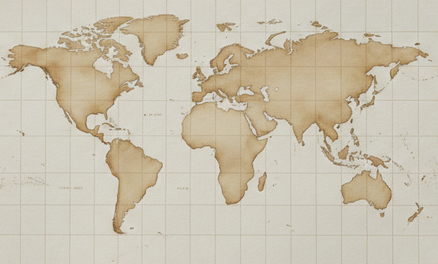

Global Exploration
地層與時間的跨國界對話

點擊地圖標記點查看考察實錄
Research Team
RESEARCH ASSISTANTS
Hsiao-Jou Wu (吳筱柔)
Yun-Ru Chen (陳韻如)
GRADUATE STUDENTS
Zong-Dai Chen (陳宗岱)
Chi-Hong Chiu (邱琪鴻)
Dai-An Lee (李岱安)
UNDERGRADUATE STUDENTS
Yu-Hsin Chang (張郁忻)
Julian Li-An Chu (朱立安)
Ya-Zhen Ho (何亞臻)
Min-Han Lee (李旻翰)
Shi-Xian Lien (連士賢)
Hsin-Jui Lung (龍昕睿)
Po-Rong Su (蘇柏榮)
Yue-Cheng Tsai (蔡岳承)
Hsiu-An Kuo (郭修安)